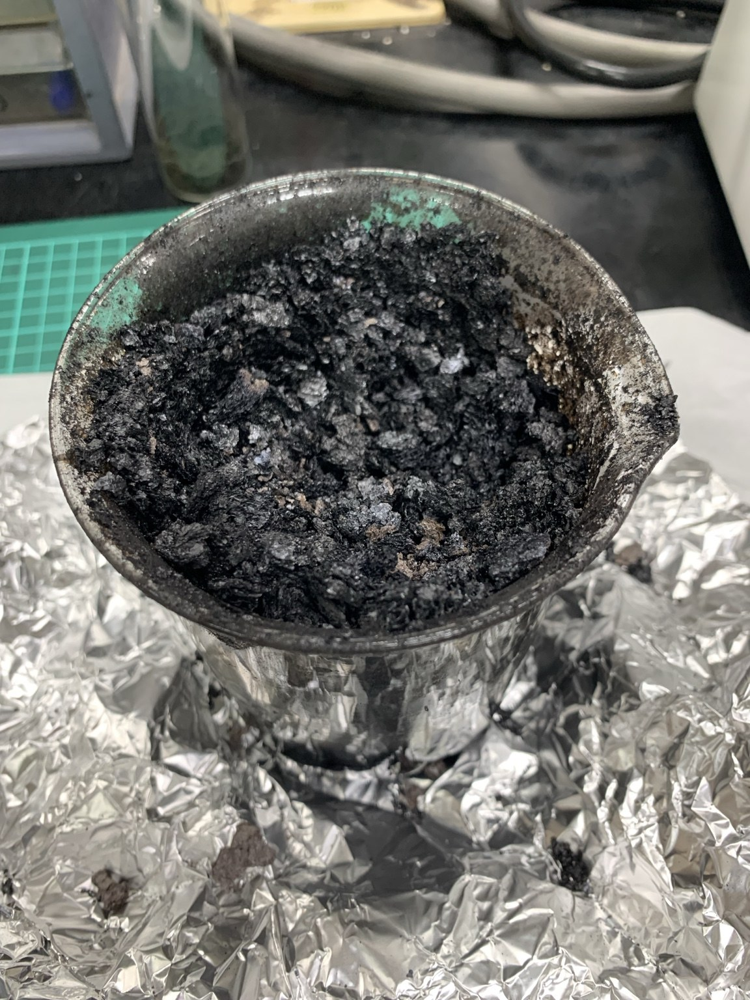

SOEC Porous Ceramic Electrode Research
Investigated gas permeability of high-temperature porous ceramic materials for SOEC applications. The project involved CMF powder synthesis, carbon pore-former optimization, ceramic processing, sintering, and materials characterization.
Focus: Porous ceramics, gas permeability, SOEC electrode materials.
SEMXRDBETGas Permeability